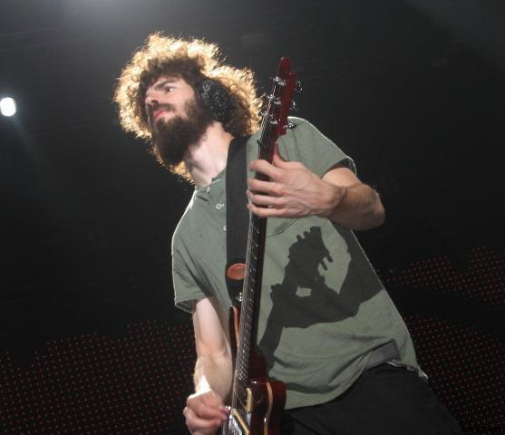
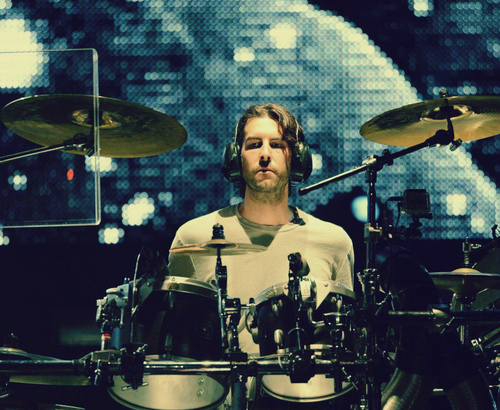

My Favorite Band
Linkin Park
Linking Park is an American-based band that is known for fusing rock and rap music. The band of five artists is native to California.
Originally, Linkin Park was known as Xero or Hybrid Theory. The names came from their first two EPs, going by the same names.
The two EPs were released between 1996 and I999.
Music Career
Linkin Park has been active in the music industry for close to three decades having started their journey in 1996. Their first biggest album
was Hybrid Theory, which received the Diamond Certification, a reward given to artists for albums that garner sales of more than 10 million copies.
To date the band has worked with two major music labels: Warner Bros & Machine Shop. The band specialises in four main genres, namely:
- Nu metal
- Rap metal
- Alternative rock
- Alternative metal
Linking Park EPs and Albums
Linking Park have a combination of at least ten popular EPs and albums to their belt. They include:
- Hybrid Theory EP (1999)
- Hybrid Theory LP (2000)
- Reanimation (2002)
- Meteora (2004)
- Collision Course EP (2006)
- Minutes to Midnight (2008)
- A Thousand Suns (2011)
- Living Things (2014)
- The Hunting Party (2017)
- One More Light (After 2017)
Of the above albums, my favorite are Meteora, Minutes to Midnight, Hybrid Theory, & Hybrid Theory Lp.
Biggest Hits from Linkin Park
Given that Linking Park have more than ten albums, there is a huge list of songs to choose from. I'll be offering at least nine songs, from their album.
Band Line Up
Linkin Park comprises of five band members:
- Mike Shinoda
- Joe Hahn
- Dave Farell
- Rob Bourdon
- Brad Delson
Biographies
Mike Shinoda
Mike Shinoda is the band's lead vocalist. He has been with the band since its conception in 1996. He is also responsible for creating the rhythm & playing the piano.
He is a family man, currently married to Anna Hillinger, with whom they have three children.
Joe Hahn
 Also known as, Mr Hahn, Joe is the band's turntablist. Professionally, he is a Disc Jockey, director, and visual artist. Joe Hahn is responsible for the
sampling and programming for all of Linkin Park's albums. He also does the backing vocals.
Also known as, Mr Hahn, Joe is the band's turntablist. Professionally, he is a Disc Jockey, director, and visual artist. Joe Hahn is responsible for the
sampling and programming for all of Linkin Park's albums. He also does the backing vocals.
Dave Farell
 On the othe hand, Dave Farell plays the band's bass guitar and helps with sampling its music. He started as a member of Tasty Snax, a Christian punk band
before joining Linkin Park in 2000. He is been with the group ever since.
On the othe hand, Dave Farell plays the band's bass guitar and helps with sampling its music. He started as a member of Tasty Snax, a Christian punk band
before joining Linkin Park in 2000. He is been with the group ever since.
Brad Delson

He is Linkin Park's lead guitarist and has been with the group since 1996. He went to high school with Mike Shinoda, a fellow band member. Brad also does
the band's vocals. before joining Linkin Park, Brad was in a band called Relative Degree for at least a year.
Rob Bourdon

Rob is Linkin Park's youngest member and plays drums and percussion instruments. His passion for drumming is said to have been inspired by an Aerosmith concert.
He happens to have dated the Aerosmith's band drummer Joey Kramer. Apparently, he started his drumming career in Relative Degree, where he played alongside fellow
Linkin Park member, Brad Delson.